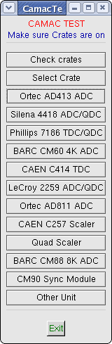

 |
TestFrom this menu we can check the crate controller(s) and CAMAC units placed at any CAMAC station. The commands are executed manually using NAF instructions corresponding to commonly available CAMAC modules. For a module not listed here one can use "Other Unit". |